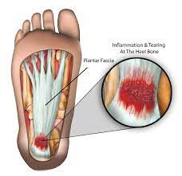

Plantar Fasciitis

CAUSES
Unfortunately, there’s no discernable cause for some cases. However, you’re more likely to get plantar fasciitis if:
- You have high-arched feet or flat feet.
-
You wear shoes that don’t support your feet (especially for a long time on a hard surface).
-
You’re obese. (70% of patients with plantar fasciitis are also obese.)
-
You’re an athlete.
-
You’re a runner or jumper.
-
You work or exercise on a hard surface.
-
You stand for prolonged periods of time.
-
You exercise without stretching your calves.
SYMPTOMS
Both a dull pain and a stabbing pain have been reported by patients with plantar fasciitis. The symptoms of plantar fasciitis include:
- Pain on the bottom of the heel, or nearby.
-
Increased pain after exercise (not during).
-
Pain in the arch of the foot.
-
Pain that is worse in the morning or when you stand after sitting for a long time.
-
A swollen heel.
-
Pain that continues for months.
-
A tight Achilles tendon. (80% of people report this symptom.) Your Achilles tendon connects your calf muscles to your heel.
DIAGNOSIS
To determine other possible causes, your healthcare provider may order imaging tests including:
- X-rays.
-
Bone scans.
-
Ultrasound.
-
Magnetic resonance imaging (MRI).
TREATMENTS
Over 90% of those who have plantar fasciitis will improve within 10 months with the following at-home remedies. They include:
- Stretching your calf muscles.
-
Wearing supportive, sturdy, well-cushioned shoes. Don’t wear sandals or flip flops that do not have a built in arch support. Don’t walk with bare feet.
-
Using appropriate shoe inserts, arch supports or custom-made foot orthotics.
-
Using a night splint to reduce tightness in the calf muscle.
-
Massaging the area.
-
Putting ice on the area three to four times per day for 10 to 15 minutes.
-
Limiting physical activity including prolonged standing.
Taking over-the-counter nonsteroidal anti-inflammatory drugs (NSAIDs) like ibuprofen (Advil®, Motrin®) or naproxen (Aleve®).
-
Losing weight.
-
Using crutches.